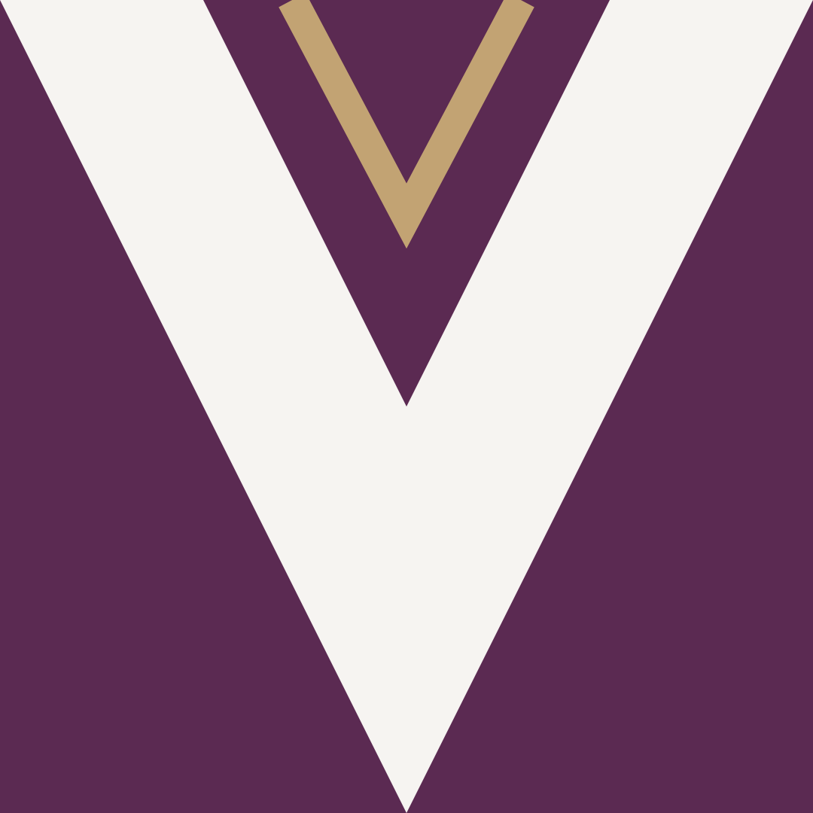
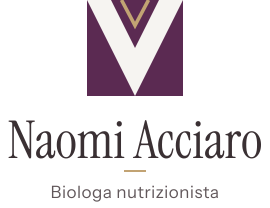

Come usare logo, colori, caratteri, icone e grafica del sito di Naomi Acciaro, perché tutto resti coerente: sul sito, sui social, sulla carta. Slogan: Con scienza e coscienza.
Il marchio nasce dall'immagine di Naomi in camice: la scollatura a V del camice bianco sopra la camicetta prugna. Un quadrato prugna, una V avorio, un filo miele sulla scollatura. Spigoli vivi, forma esatta: come una misura.

Avatar socialMarchio e scritta (Instrument Serif, con le spaziature corrette, convertita in tracciati). Usare sempre i file in brand/logo/, mai riscrivere il nome a mano.

Verticale: locandine, bigliettiUna palette ricavata dalla foto: prugna dalla camicetta, neutri caldi dal camice e dalla parete, miele dai capelli. Niente nero pieno e niente bianco puro.
#5b2a52Colore del marchio: bottoni, titoli di accento, riquadri di chiusura. Dalla camicetta della foto.#43203dPiede del sito, fondo dei video, ombre colorate.#f6f4f1Bianco caldo: testo su prugna, card, V del marchio. Mai bianco puro.#e9e5deFondo principale del sito.#ddd7ccFondo delle sezioni con foto (A tavola).#c2a373Filo sulla scollatura, numeri in contorno, dettagli. Dai capelli. Non per testo piccolo su chiaro.#3a3033Testo. Un bruno-prugna, mai nero pieno.| Coppia | Rapporto | Livello |
|---|---|---|
| Inchiostro su Parete | 10.1:1 | AAA |
| Testo secondario #61575a su Parete | 5.5:1 | AA |
| Testo secondario su Sabbia | 4.9:1 | AA |
| Prugna su Parete | 8.8:1 | AAA |
| Camice su Prugna | 10.1:1 | AAA |
| Camice su Prugna scuro | 12.6:1 | AAA |
| Miele su Prugna scuro | 5.8:1 | AA |
| Miele scuro #86693f su Camice (solo tratti e testo grande) | 4.7:1 | AA |
Due famiglie con licenza OFL, ospitate sul sito (nessun servizio esterno). Il serif dà autorevolezza e calore; il sans dà chiarezza.
Instrument Sans (regular e bold) per testi, bottoni e microcopy. Corpo 17 px, interlinea 1,65, righe sotto i 70 caratteri.
| Uso | Carattere | Misura |
|---|---|---|
| Titolo di pagina (H1) | Instrument Serif | 40–110 px, interlinea 0,94 |
| Titolo di sezione (H2) | Instrument Serif | 38–69 px, interlinea 1,02 |
| Scheda (H3) | Instrument Serif | 22–28 px |
| Testo | Instrument Sans 400 | 17 px / 1,65 |
| Bottoni, etichette | Instrument Sans 700 | 15–17 px |
Set proprio (public/img/icons.svg): griglia 24, tratto 1,5, angoli vivi e terminali squadrati, colore prugna dentro una tessera con rilievo. Una sola famiglia, mai icone prese da altri set.
Quattro segni che si riconoscono: spigoli vivi, la V del colletto, la luce della finestra, la stampa incorniciata. La profondità la fanno solo le ombre.
Angoli vivi ovunque (border-radius: 0). Ombre a più strati, calde.
La V del colletto: motivo per chiusure, riquadri e dettagli.
Luce a strisce da tapparella, sfocata: apertura di ogni pagina.
Foto come stampa: passepartout avorio, lastra prugna dietro.
Una professionista che parla in prima persona e dà del tu. Frasi corte, concrete, a vantaggio di chi legge.